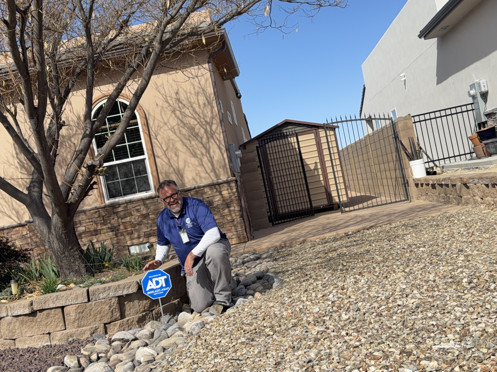

Security System Installation for a New Homeowner in Albuquerque, New Mexico
Diego recently moved into his first home in Albuquerque and wanted to put a security system in place before settling into the property. We walked the home together, discussed entry points, camera coverage, and future expansion options, then designed a system that fit his goals and budget while leaving room for future upgrades.
Project Summary
The completed installation included professionally installed door and window protection, motion detection, a glass-break sensor, a video doorbell camera, and an outdoor security camera. The system was connected to the ADT Control and Google Home apps, allowing remote access, notifications, and system management from anywhere.
- Door and window protection
- Motion detector
- Glass-break sensor
- Video doorbell camera
- Outdoor security camera
- ADT Control app integration
- Google Home integration
- System setup and customer training
Installation Photos


Final walkthrough and ADT yard sign placement after installation.

Cleanly mounted keypad installation and system setup.

TV mounting completed during the project.
Customer Review
★★★★★
"Joe installed a security system in my home in Albuquerque. He also installed window security, as well as some cameras. He was very friendly and provided a reliable service."
Need Security Installation in Albuquerque?
Southwest Security & Automation provides residential security system installation, security cameras, doorbell cameras, smart home integration, and life safety devices throughout Albuquerque, Santa Fe, Farmington, Durango, and the Four Corners region.
Call or Text: 505-331-7834
Email: joe@swsa.ai